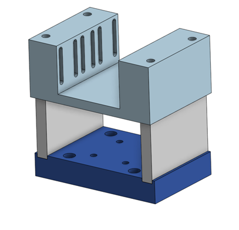
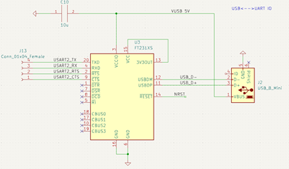

Week 3 Progress Report
Date: 9/4-9/10/2023
Total Hours: 15
Description of Design Efforts:
Primary design focus for me this week was fleshing out the design and ordering the parts for the CoreXY gantry system. However, most of my hours this week were spent under the table removing 1.5in screws from the underside of the table such that the mounting points for the motors could actually be accessed.
Additional work was also done setting up the PCB footprints, baseline schematics, and power control systems for the microcontroller system.
Mechanical Systems Progress (3 hours)
As shown in week 2, the CoreXY system requires 2 motors, 6 idler pulleys, and a set of horizontal rollers. To minimize the number of belt crossings to be done over the play surface, the motors will be mounted near the center line of the table.

Unfortunately for me, that meant removing the siding on the edge of the table which, for obvious reasons, is very tightly screwed into the structure of the table. Due to the angles at play on the underside of the table, screws were inaccessible to a drill and had to be done manually. In total removing the sideboards took nearly 6 hours and an intense arm workout.
PCB Progress
After deciding to use the STM32F091 microcontroller (the same one used for ECE362), I was able to start doing preliminary setup for the PCB power control and programming in KiCad. Immediately after writing this report I will be communicating with the software side of our team to decide whether we want to program on I2C or USART and will connect the programming pins accordingly.
Note that the PCB footprints still seem to be mapped slightly incorrectly. F091 seemingly has some issues with the pin length on the footprint. Will include in next week’s progress report once fixed.

Week 2 Progress Report
Date: 8/28-9/3/2023
Total Hours: 15
Description of Design Efforts:
This week’s primary task was to narrow the exact scope of the project to write complete PSDRs, continue investigating the mechanical systems to find the method of XY control, and start learning KiCad. The narrowing of scope was a team effort and can be summarized by reading the A1 documentation on the group website.
Continuing investigation of mechanical systems
While the motors and motor power systems were set last week, the actual arrangement of pulleys/gantry needed to be finalized this week. Ultimately, we settled on the CoreXY system for rapid motion in a 2D space. This method allows both motors to be fixed in space (unlike a classical gantry system which requires one of the two motors to be moved). Hopefully, this should allow for much faster acceleration of the mallet on the surface of the table. Additionally, it is important to note with this system that teethed belts and pulleys will be used rather than cables and cable spools. This should increase the XY motion accuracy of the system.

Figure 1: CoreXY Motion Control Theory
My final element of progress doesn’t fit into design efforts but was still a significant time sink this week. That being getting the table from a man on Facebook marketplace.
Week 1 Progress Report
Date: 8/21-8/27/2023
Total Hours: 10
Description of Design Efforts:
First week of the semester was fairly uneventful in terms of actual design work. Primary task focused on setting up the course-required website and design journals.
Research of mechanical systems
I took charge of mechanical systems research to find the required torque, speed, and accuracy we need out of our stepper motors along with the pulley/gantry arrangement and motor power/control systems. We are hoping for a rough max acceleration of 20 m/s^2 and a max speed of 27.2 m/s (60mph) while also maintaining a step accuracy down to .5 inches (I.E., one step of the motor will produce .5 inches or less of linear motion). For this system, I believe that I have settled on a NEMA 23 Bipolar Lathe Router, a DM542T CNC Stepper Driver, and am still doing research into the exact pulley system to be implemented.
Website Setup
I also took charge of the setup of the group website. From the provided template, I added all team-member information and set up the github repositories (one for website data, one for source code) in a format that would be easily accessed by my team members to update their own progress reports.
One note on this, git for windows will not preserve soft-symbolic links which are required for the functioning of the website as windows sees them as a security threat. To re-enable the symbolic link requires a linux command (ln -s /web/entities/477grp16 web). This can only be accessed with ssh’ing into the 477grp16 machine, which must be accessed using ssh to career account and then su to the 477grp16 account.